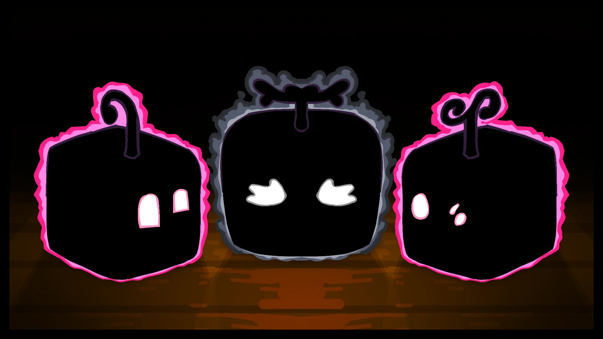
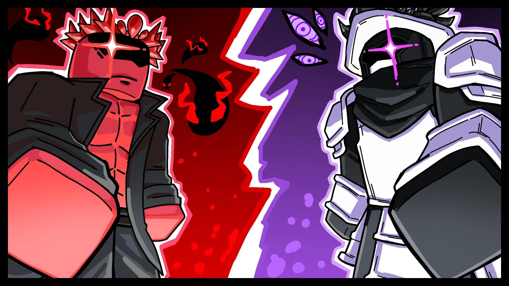
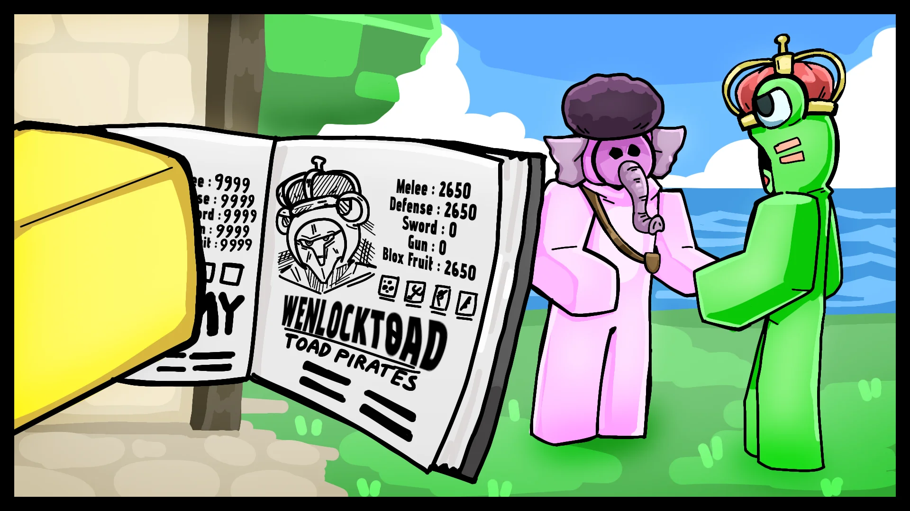
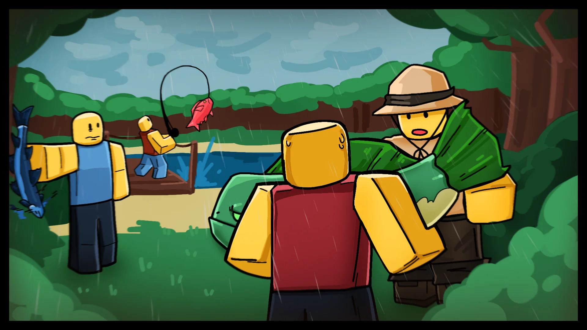

The Blox Bulletin
Nouvelles de la Mise à Jour 27, Journaux Révélés et Affaires de Poissons
L'Expansion Estivale des 50 Milliards !
Place, parce qu'une grande nouvelle a frappé !
Blox Fruits a décidé de lancer certains de ses plans les plus ambitieux à ce jour. Pour célébrer l'incroyable jalon de 50 milliards de visites, nous introduisons un nouveau format de mise à jour conçu pour livrer du contenu plus fréquemment et de manière plus cohérente. Cette nouvelle approche marque un pas majeur dans la façon dont nous apportons de nouvelles expériences à nos joueurs.
En commençant en fin juillet, l'Expansion Estivale déploiera une série de mises à jour hebdomadaires. Celles-ci incluront des reworks de fruits, des nouvelles mécaniques de gameplay, et plusieurs fonctionnalités très attendues teasées dans les récents articles de blog. Préparez-vous à une vague de changements passionnants dans le monde de Blox Fruits !


Dans le cadre de cette expansion multi-semaines, un événement de célébration à durée limitée sera lancé plus tard dans le cycle de mise à jour. Conçu pour marquer le jalon des 50 milliards de visites, cette nouvelle expérience offrira aux joueurs la chance de gagner des objets exclusifs — et pourrait ouvrir la voie à plus d'événements du genre à l'avenir.
Grâce à notre lead Blox Fruit Technician, CJ_Oyer, le pipeline de développement est plus agile que jamais — rendant possible des contenus surprises comme celui-ci. Faites-nous savoir ce que vous en pensez une fois que c'est en direct !
Les Secrets du Journal du Biographe se Dévoilent
L'intégralité du journal du bulletin précédent a enfin été récupérée, et les découvertes sont rien moins qu'extraordinaires !
Les découvertes montrent que le biographe anonyme n'était pas un simple observateur. Chaque page offre un compte rendu soigneusement consigné de la construction d'une personne, de son équipage, de ses achievements, et même de ses habitudes de langage ! Une page note qu'une personne utilise fréquemment le mot « Mangos »... étrange.
Ce journal sera bientôt partagé avec le public, agissant comme une sorte d'encyclopédie. Quel étrange héritage laissé derrière... mais c'en est un qui aidera d'innombrables aventuriers à suivre les uns les autres, forger des réputations, et suivre leur propre progression personnelle.

Miracle Soudain ! Le Parc d'État Respire à Nouveau

Après quelques journées difficiles au parc d'État asséché, un miracle mystérieux s'est produit quand des nuages de pluie ont survolé la zone, trempant à nouveau la forêt !
Les campeurs, les randonneurs et les équipages locaux affluent au parc avec leurs cannes à pêche en main, et des tonnes d'histoires à raconter. Avec les poissons qui remontent le courant et la forêt bourdonnante de vie, le temps de qualité passé ici n'a pas été aussi significatif depuis longtemps.
Le parc d'État est vivant à nouveau, et l'esprit de la forêt aussi. Cela nous enseigne que peu importe combien durent les difficultés, le temps nous en viendra toujours à bout.
 Discord
Discord
 TikTok
TikTok
 Youtube
Youtube